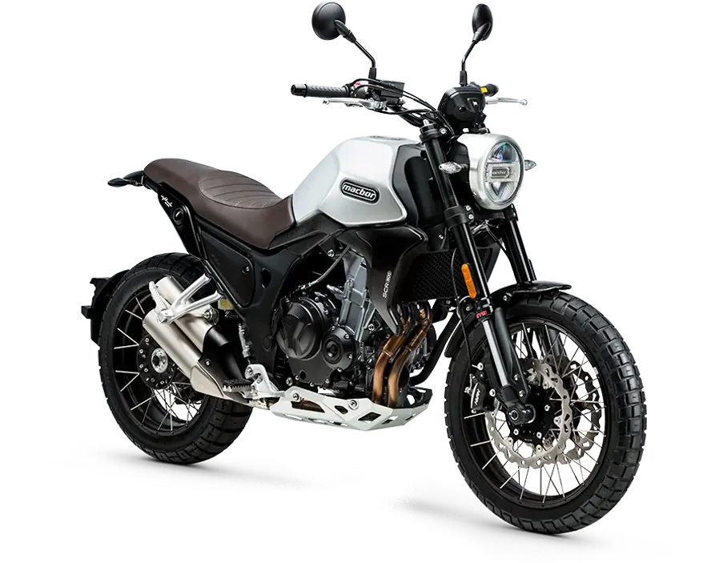
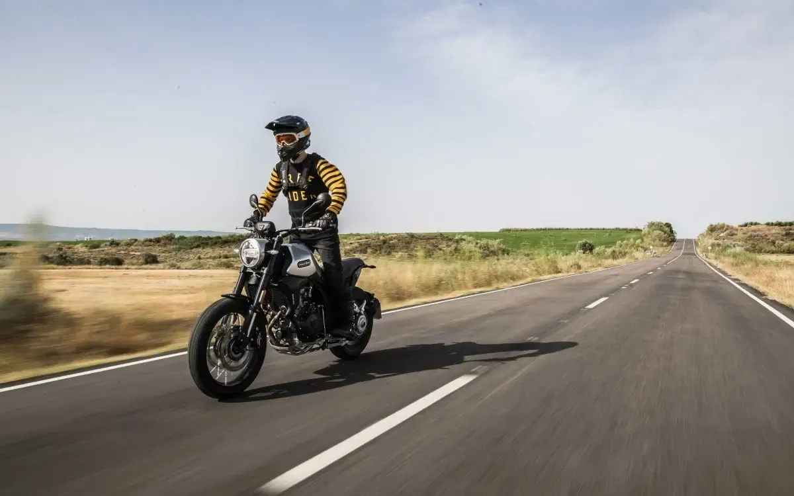
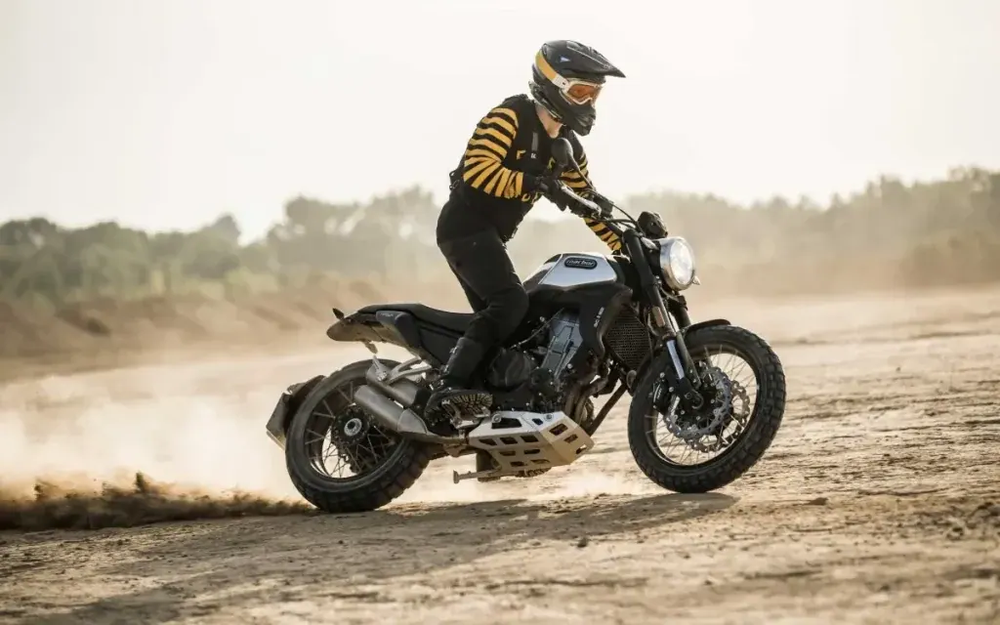
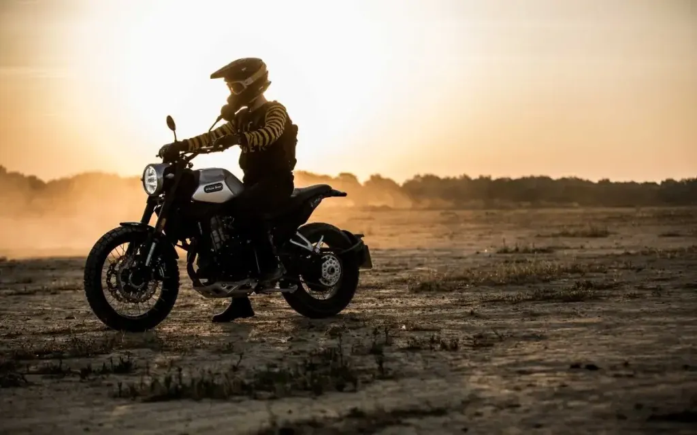
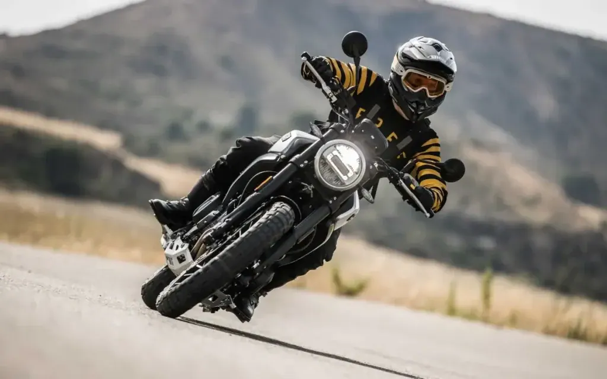

Macbor
Eight Mile 500 Street
A2 500 cc · 35 kW · Clásicas
Propuesta de OpsPilot para Expomoto Córdoba, en revisión. No es la web oficial: expomotocordoba.es
Inicio › Motos › Macbor › Eight Mile 500 Scrambler

Macbor
Precio y financiación: te los damos al momento por teléfono (pendientes de publicar en la web).




Porque somos mitad razón y mitad corazón, pero a veces, la locura y la sensatez se encuentran, llegando la magia. Bienvenido a Eight Mile, sea cual sea la tuya, ya has llegado a tu mundo.
No existe un camino mejor que el otro, solo importa el que tú eliges. Puedes vivir la vida de otros, o puedes jugar a arriesgar y marcar tú las reglas. Es tu vida: ¿quieres conducir o vas a dejarte llevar?
La moto con un punto rebelde, como tú. Valiente, polivalente y versátil. Una bella muy bestia, concebida para rugir tanto en pista como asfalto. Pensada para los que entienden que la vida es divertida, o no es.
| Motor | Bicilíndrico, 4 Tiempos, 8 Válvulas |
|---|---|
| Cilindrada | 471 cc |
| Diámetro por carrera | 67 x 66,8 |
| Ratio | 10,7:1 |
| Encendido | ECU |
| Arranque | Eléctrico |
| Potencia | 35 kW (46,94 CV) / 8.500 rpm |
| Par motor | 43 Nm/6.500 rpm |
| Consumo | 3,9 L / 100 Km |
| Velocidad Máxima | 175 km/h |
| Dimensiones | 2110 x 895 x 1145 mm (largo x ancho x alto) |
| Altura Asiento | 790 mm |
| Peso Vacío | 175 Kg |
| Peso en orden de marcha | 195 Kg |
| Distancia entre ejes | 1.440 mm |
| Distancia mínima al suelo | 180 mm |
| Caja de cambios | Manual de 6 velocidades |
| Neumático Delantero | PIRELLI MT60 – 110/80R18 |
| Neumático Trasero | PIRELLI MT60 – 160/60R17 |
| Suspensión Delantera | Horquilla invertida KYB 41 mm. No regulable. Recorrido : 155mm |
| Suspensión Trasera | Monoamortiguador KYB. Sistema Progresivo por Bieletas. Recorrido: 165mm |
| Freno | Delantero: Doble Disco Wave Flotante 298 mm. Pinzas Nissin doble pistón. Trasero: Disco Wave 240mm. Pinza Nissin |
| ABS | 3 modos, desconectable |
| Instrumentos | Panel de instrumentos LED High Resolution |
| Colores | Amarillo, Negro, Rojo Metalizado |
Datos de la marca, tal como se publican en expomotocordoba.es.